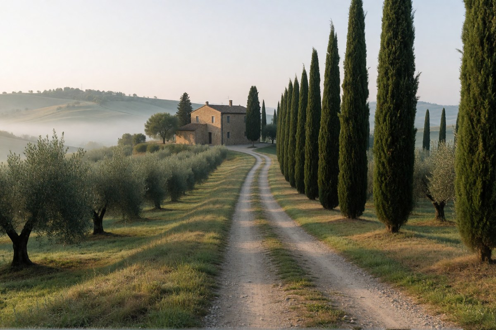

Cronaca · 21 novembre 2026
È morto Gianni De Gennaro, era indagato per il depistaggio su via D'Amelio

L'ex capo della Polizia, 78 anni, è stato trovato senza vita nella sua casa di campagna in Toscana. Il 1° dicembre il tribunale del riesame di Caltanissetta avrebbe dovuto decidere sulla richiesta di arresto.
di Franco Zanghì
Gianni De Gennaro è morto. L'ex capo della Polizia, 78 anni, è stato trovato senza vita la mattina di sabato 21 novembre nella sua casa di campagna a Montiano, frazione di Magliano in Toscana, in provincia di Grosseto. Secondo le prime ricostruzioni si è tolto la vita. La notizia è stata data dal Corriere della Sera e confermata all'ANSA da fonti qualificate.
Ad avvisare i carabinieri, intorno alle 9, sono stati gli inservienti della casa. De Gennaro era solo, e dalla sera precedente non si avevano più sue notizie. Sono in corso i rilievi.
L'inchiesta di Caltanissetta
Da pochi giorni De Gennaro era indagato dalla Procura di Caltanissetta per depistaggio. L'inchiesta riguarda la strage di via D'Amelio del 19 luglio 1992, in cui furono uccisi il giudice Paolo Borsellino e cinque agenti della sua scorta, e la scomparsa dell'agenda rossa del magistrato.
I magistrati nisseni stanno ricostruendo la catena di comando che faceva capo ad Arnaldo La Barbera, allora a capo della Squadra mobile di Palermo, nelle indagini che portarono alla falsa testimonianza del collaboratore di giustizia Vincenzo Scarantino.
Secondo l'accusa De Gennaro avrebbe cercato, attraverso due collaboratori, di impedire a un pentito di mafia di parlare con i magistrati, e avrebbe fatto sparire documenti relativi al suo arresto, nel 1989.
La richiesta di arresto e il riesame
I carabinieri del Ros avevano eseguito delle perquisizioni, compresa quella nella sua abitazione. Poi la Procura gli aveva notificato l'avviso di garanzia e aveva chiesto per lui gli arresti domiciliari.
Il giudice per le indagini preliminari aveva respinto la richiesta, e la Procura aveva fatto ricorso al tribunale del riesame. Come scrive il Fatto Quotidiano, la decisione era attesa per il 1° dicembre.
Per De Gennaro valeva la presunzione d'innocenza: non c'era nessuna condanna, e nemmeno un processo.
Le reazioni
Le reazioni sono arrivate subito, e sono lontane fra loro. Il sottosegretario alla presidenza del Consiglio Alfredo Mantovano si è detto sconvolto e lo ha ricordato come un servitore dello Stato. Il ministro degli Esteri Antonio Tajani ha parlato di una vittima di un processo fatto fuori dal tribunale.
Da Palermo Salvatore Borsellino, fratello del giudice, ha usato all'ANSA parole durissime: «La morte di De Gennaro, a mio avviso, vede la procura di Caltanissetta come responsabile di istigazione al suicidio». Secondo lui l'inchiesta non era di competenza di Caltanissetta ma di Palermo, e sarebbe servita a togliere responsabilità ai Ros e ai servizi segreti sulla sparizione dell'agenda rossa, «per spostare l'attenzione sulla Polizia». Sono accuse sue, e pesanti: dalla Procura di Caltanissetta, al momento, non risultano commenti.
Il Corriere della Sera, ripreso da Tgcom24, scrive che De Gennaro era sconvolto dall'inchiesta. Il sito Italia Sette precisa che per ora non ci sono elementi che leghino in modo diretto l'inchiesta e quello che è successo.
Il commento dell'autore
Una cosa va detta con chiarezza: De Gennaro era indagato, non condannato, e la presunzione d'innocenza valeva per lui come vale per chiunque. Con la sua morte il procedimento nei suoi confronti si chiude.
Che cosa ne sarà dell'inchiesta sul depistaggio, e di quella verità su via D'Amelio che si aspetta da trentaquattro anni, al momento non si sa.
Fonti
- ANSA, 21 novembre 2026, ore 11:31 e 11:52 (le dichiarazioni di Salvatore Borsellino)
- Sky TG24, «Morto Gianni De Gennaro, ex capo Polizia si è ucciso. Si indaga per istigazione a suicidio», 21 novembre 2026
- La Nazione, la cronaca da Grosseto e le parole della difesa, 21 novembre 2026
- Corriere della Sera, la prima notizia e la ricostruzione dei giorni precedenti; Tgcom24, la ripresa
- Il Fatto Quotidiano, la data fissata per il tribunale del riesame; Il Foglio, il cordoglio; Italia Sette, la precisazione sul nesso fra inchiesta e morte
- Articoli precedenti di questo sito sull'inchiesta: l'avviso di garanzia, il rigetto dei domiciliari e le motivazioni del gip
Su scelta dell'autore non sono riportati dettagli sulle modalità della morte. La ricostruzione dei fatti è ancora in corso e le informazioni qui raccolte sono quelle disponibili alla data di pubblicazione.